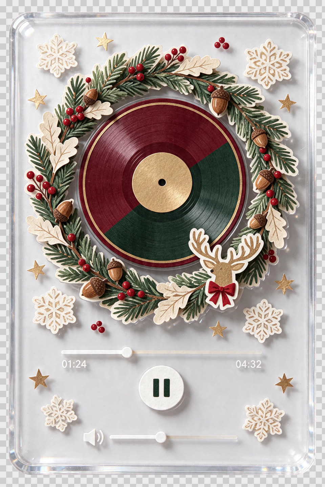

Seedream 5.5 (official): text-to-RGBA Christmas acrylic standee, scrapbook wreath around a two-tone vinyl record with a music-player UI, transparent background

The official text-to-RGBA example from BytePlus's new Dola Seedream 5.5 tutorial. It shows how to prompt a cut-out product asset with a real alpha channel: name the material and its edge ("a thin white edge on all sides that brings out the transparent material"), describe a layered scrapbook collage (wreath, berries, stars, reindeer and snowflake stickers), add a small UI with exact numbers ("01:24 / 04:32"), give a 4-colour palette, ask for "highlights refracted by the acrylic thickness", and end with "Set a transparent background." With the API set to background transparent and output_format png, the result is a sticker-ready RGBA PNG. Good for merch, gift-shop and seasonal product sheets, or as a layer composited over Seedance 2.5 footage.
Prompt
A transparent acrylic standee with a Christmas theme, a rectangular outline, and a thin white edge on all sides that brings out the transparent material. Use a scrapbook collage style: place a red-and-green two-tone vinyl record with a golden rim at the center, surrounded by a dimensional Christmas wreath of acorn leaves and pine branches. Decorate the wreath with hand-drawn red berries, golden four-pointed stars, reindeer, and snowflake stickers. Overlay a minimalist white music-player UI below, with play/pause controls, a progress bar (01:24 / 04:32), and a volume icon. Use vintage red, forest green, champagne gold, and off-white. Add occasional highlights refracted by the acrylic thickness for a realistic product finish. Set a transparent background.
Our Seedance 2.5 adaptation
[ADAPTED for Seedance 2.5 by Grok Bot; not the creator's prompt. Follows the official BytePlus Seedance 2.5 prompt guide and its official sd25-pe prompt-optimizer skill: parameters only on the API line (not in the prompt body), subject + action + scene, then visuals, camera (move, subject, start, direction, arrival) and sound; only the source's own exclusions are kept.] API: duration 6, ratio adaptive, resolution 1080p, generate_audio true; first_frame = the Seedream 5.5 acrylic standee placed on a neutral surface (the RGBA PNG composited onto a background first). 【Subject】The Christmas acrylic standee exactly as in the first frame: two-tone red-and-green vinyl record with a gold rim, pine-and-acorn wreath, berries, gold stars, reindeer and snowflake stickers, the white music-player UI reading 01:24 / 04:32. 【Action】The standee turns slowly on a small turntable through about 30 degrees; light catches its edges. Nothing on it changes. 【Camera】Locked, slightly low product angle, a barely perceptible push in. 【Visuals】Clean warm studio light, bright refracted highlights along the acrylic thickness, soft shadow. No added text. 【Sound】Soft festive room tone and a faint turntable hum.
Tags: native RGBA, transparent background, acrylic standee, scrapbook collage, seasonal / Christmas, UI overlay with exact numbers, 4-colour palette, official example, Seedream 5.5